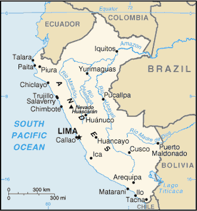
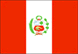

[Voir le carnet de route du Pérou]
Itinéraire prévisionnel :
 Lima
Lima
 Pisco - Paracas : observation faune
Pisco - Paracas : observation faune
 Ica + lagune de Huacachina
Ica + lagune de Huacachina
 Nazca : mystérieuses lignes
Nazca : mystérieuses lignes
 Canon del Colca : un des canyons les plus profonds du monde
Canon del Colca : un des canyons les plus profonds du monde
 Arequipa
Arequipa
 Cuzco et la Vallée Sacrée : Machu Pichu
Cuzco et la Vallée Sacrée : Machu Pichu
 Puno et lac Titicaca
Puno et lac Titicaca
 
Superficie : 1 285 000 km² (2,3 fois la France)
Population : 23,4 millions d’habitants
Capitale : Lima
Population et ethnies : 54% d’Amérindiens ; 32% de Mestizos (croisés d’Européens et d’Amérindiens) ; 12% de descendants d’Espagnols ; 2% de Noirs ; ainsi qu’une minorité d’Asiatiques
Langues : espagnol, quechua, aymara
Religions : plus de 90% de catholiques romains
Institutions politiques : démocratie
Principales activités : l’agriculture, la pêche, les feuilles de coca, le papier, les minerais, le pétrole, les produits chimiques
Visa : non
Monnaie : le Nuevo sol (1€ = 4.3 Nuevo sol en 2004)
Budget quotidien : 18 à 28 US $/jour.
- Consulat
25 rue de l’Arcade, 75008 Paris.
Tél. : 01 42 65 25 10. Ouvert de 9h00 à 14h00.
Consulats à Lyon, Marseille et Strasbourg.
http://www.amb-perou.fr - Librairie Hispano-américaine 26 rue Monsieur Le Prince, 75006 Paris.
- Maison de l’Amérique Latine
217 bd St Germain, 75007 Paris.
Tél. : 01 49 54 75 08.
http://www.mal217.org
Ambasssade de France :
| Adresse | Avenida Arequipa 3415, CC 607, San Isidro |
| Ville | Lima |
| Téléphone | (511)215 84 00 & 215 84 02 |
| Fax | ((511)215 84 20 |
| URL | http://www.ambafrance-pe.org |
Liste des médecins :
- Chirurgie :
Ville : Lima
Nom : Dr. AGUINAGA Alejandro
Adresse : 1055 Independencia Lima 18
Téléphone : 221 33 99
Langues : Anglais et français
Commentaire : Chirurgien ayant suivi sa formation en France. Exerce à l’hôpital Loayza
- Dentiste :
Ville : Lima
Nom : Dr Berger
Adresse : 760 av.Parque Sur
Téléphone : 475 40 21
Langues : -
Commentaire : -
Ville : Lima
Nom : Dr. ZAVALA STANBURY
Adresse : Cesar Verones 202 San Borja
Téléphone : 436 7251
Langues : -
Commentaire : -
- Généraliste :
Ville : Lima
Nom : Dr. CHESMAN Ricardo
Adresse : 165 Marconi, Lima 27
Téléphone : 440 4270
Langues : Espagnol, anglais et français
Commentaire : Médecin approuvé par l’ambassade française
Ville : Lima
Nom : Dr. VANDERGHEN
Adresse : San Borja clinic 337 av. Guardia Civil Lima 41
Téléphone : 475 2143/436 7617
Langues : Espagnol, anglais et français
Commentaire : -
- Hôpital :
Ville : Lima
Nom : RICARDO PALMA Clinica
Adresse : Av. Javier Prado Este 1066 San Isidro
Téléphone : 224 2224
Langues : -
Commentaire : Excellent !
Ville : Lima
Nom : ANGLO-AMERICANA Clinica
Adresse : Alfredo Salazar 3ra. Cdra. San Isidro
Téléphone : 221 3656
Langues : -
Commentaire : Egalement excellent. ce n’est pas pour autant qu’il faut tomber malade !
Ville : Lima
Nom : MILITARY Hospital
Adresse : -
Téléphone : 382 213
Langues : -
Commentaire : Bonne qualité des soins
- Pharmacie :
Ville : Lima
Nom : DEZA
Adresse : 1144 Conquistadores Lima 27
Téléphone : 408911 / 225112
Langues : -
Commentaire : Assez bien fournie
Ville : Lima
Nom : SUPER FARMA
Adresse : Avenida Central N 717 OF8 A
Téléphone : 24 69 73
Langues :
Commentaire : Vu son nom, cette pharmacie ne peut être que bien !